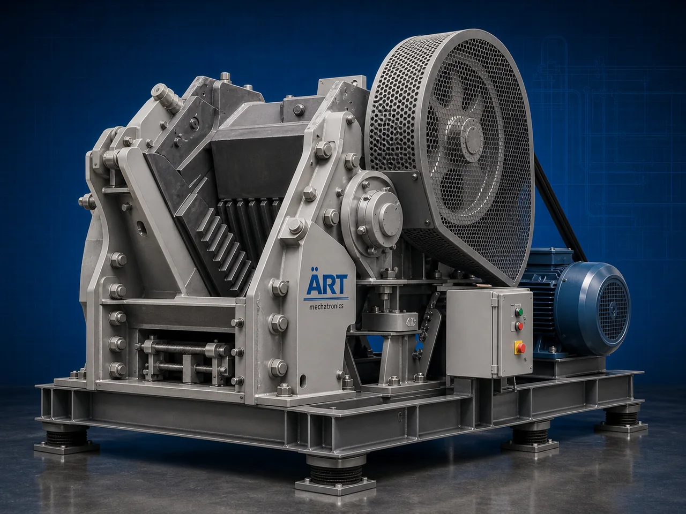

Crusher Machine (Industrial Crushing & Size Reduction System)
A Crusher Machine, also known as an Industrial Crusher, Crushing Machine, Material Crusher, or Industrial Size Reduction System, is an advanced industrial processing solution designed for crushing, breaking, shredding, granulation, coarse grinding, particle reduction, and high-capacity material processing operations across mining, food processing, spice processing, chemical, agro, plastic, biomass, recycling, and industrial manufacturing industries.

About the Crusher Machine
Crusher systems are widely used for:
- Mineral crushing operations
- Food ingredient crushing
- Spice and herb crushing
- Plastic and rubber crushing
- Biomass size reduction
- Chemical material crushing
- Industrial scrap processing
- Continuous material reduction operations
The machine improves:
- Material size reduction efficiency
- Production capacity
- Processing consistency
- Material handling productivity
- Industrial automation performance
- Product quality standards
- Recycling efficiency
Industrial crusher machines use:
- Heavy-duty crushing chambers
- Hardened crushing blades and hammers
- High torque drive systems
- PLC and HMI automation controls
- Rugged industrial construction
to automatically crush and process materials with superior efficiency and high industrial productivity.
Industrial crusher machines are widely used in industries such as:
Mining industries Food processing industries Spice processing industries Chemical industries Plastic recycling industries Biomass industries Agro industries Industrial manufacturing industries
where heavy-duty crushing, continuous processing, and high-capacity material handling are essential.
The machine is highly suitable for:
- Mineral and stone crushing
- Spice and food crushing
- Plastic scrap processing
- Biomass material reduction
- Industrial recycling operations
- Heavy-duty material processing systems
ART Mechatronics offers high-performance crusher machines, engineered for continuous industrial operation, rugged crushing performance, high-capacity processing, and reliable long-term industrial productivity.
Working Principle of Crusher Machine
- 1. Material Feeding & Loading Raw materials are automatically or manually fed into crushing chamber for processing operation.
- 2. Crushing & Size Reduction Process Machine automatically crushes, breaks, cuts, or grinds materials using heavy-duty crushing systems and high torque drive mechanisms.
Precision crushing systems ensure efficient material reduction and smooth processing operations.
- 3. Crushing & Material Processing Operation Machine handles processing of: ✔ Minerals and stones ✔ Spices and herbs ✔ Food ingredients ✔ Plastic materials ✔ Rubber products ✔ Biomass materials ✔ Chemical products ✔ Industrial scrap materials
accurately and continuously.
- 4. Material Reduction & Processing Process Machine performs: Crushing Breaking Shredding Granulation Coarse grinding Particle reduction
for efficient industrial material processing operations.
- 5. Intelligent Automation & Safety Integration Optional systems include: Dust extraction systems Automatic feeding systems Cooling systems Safety guarding systems Noise reduction systems
- 6. Finished Material Discharge Processed materials discharged automatically for: Further processing Grinding operations Packaging systems Storage silos Export shipment handling
Types of Crusher Machines
- 1. Hammer Crusher Machine Designed for: ✔ Heavy-duty industrial crushing applications
- 2. Jaw Crusher Machine Suitable for: ✔ Mineral and stone crushing systems
- 3. Plastic Crusher Machine Uses: ✔ Plastic recycling and scrap processing operations
- 4. Food & Spice Crusher Machine Designed for: ✔ Food ingredient and spice crushing systems
- 5. Biomass Crusher Machine Suitable for: ✔ Biomass and agro material processing operations
- 6. Fully Automatic Industrial Crushing System Designed for: ✔ Complete industrial processing automation lines
Industries Using Crusher Machines
⛏️ Mining Industry Mineral crushing, stone processing, and industrial material reduction systems. 🌶️ Spice Processing Industry Turmeric, chilli, herbs, and spice crushing operations. 🍅 Food Processing Industry Food ingredients, agro products, and industrial crushing systems. ♻️ Plastic Recycling Industry Plastic scrap processing and industrial recycling operations. ⚗️ Chemical Industry Industrial chemicals, powders, and material crushing systems. 🌾 Agro & Biomass Industry Biomass materials, seeds, and agricultural product processing systems.
Features & Advantages
- High-capacity automatic crushing operation
- Heavy-duty industrial crushing technology
- Accurate and efficient material size reduction
- PLC and automation control systems
- Improves production efficiency and processing consistency
- Reduces manual material handling dependency
- Supports multiple industrial materials and applications
- Reliable long-term industrial performance
- Smooth integration with industrial production lines
Technical Highlights
Machine Type: Crusher machine Industrial crushing system Material size reduction machine Material Compatibility: Minerals and stones Spices and herbs Food ingredients Plastic materials Rubber products Biomass materials Industrial scrap materials Integration: Crushing blade systems Hammer mill systems Automatic feeding systems Dust extraction systems Features: PLC control system Touchscreen HMI Heavy-duty steel construction High torque drive systems Noise reduction systems Applications: Crushing Material breaking Industrial recycling Size reduction Scrap processing Biomass preparation Automation: Semi-automatic Fully automatic industrial systems
Turnkey Crushing Solutions
ART Mechatronics offers: Complete industrial crushing systems Automatic material reduction solutions Industrial recycling automation systems Dust handling integration systems Installation & commissioning After-sales service & AMC
Why Choose Art Mechatronics
Expertise in industrial processing and automation systems Customized crushing solutions for multiple industries High-performance and rugged crushing technology Advanced PLC and automation systems Proven industrial processing performance across sectors
Applications
Mining & Mineral Processing Plants Food Manufacturing Facilities Plastic Recycling Units Chemical Processing Industries Agro Product Processing Plants Industrial Manufacturing Industries
Industries that use the Crusher Machine
Related Process Equipment machines
Get pricing & specs for the Crusher Machine
Share the product, target capacity, current process and plant location. These details help our engineers discuss the right machine or line configuration.
One partner, from design to start-up
ART Mechatronics designs, manufactures, installs and commissions your Crusher Machine solution with regional presence in India, UAE and Thailand.